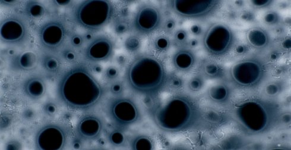

Liquid Landscape

Nan Wang
|
12 min – HD – ohne Dialog K+S+M+V: Wang Nan – SD: Wang Nan, Matthias Hurtl – T: Name – P: Juul van der Laan Website Nan Wang
|
Dienstag 16 okt 20.30 werkstattkino
Flüssigkeit trifft auf 16mm-Filmstreifen lässt dies zu einer hörbaren, immersiven Erfahrung werden. Makroskopische Bilder verschmelzen mit Sound zu pulsierenden Landschaften, die auf der Leinwand zu tanzen beginnen.
Nan Wang lebt und arbeitet in Rotterdam, Niederlande. Sie ist eine multidisziplinäre Medienkünstlerin und Filmemacherin. Ihre Arbeiten konzentrieren sich auf den Schnittpunkt zwischen Erinnerungen, Identitäten und Technologie, eingebettet in den sozialen und gemeinschaftlichen Kontext. |
| Films Dust Poetry 2013 – Hometown (mit Esther Urlus) 2015 – Liquid Landscape 2018 |